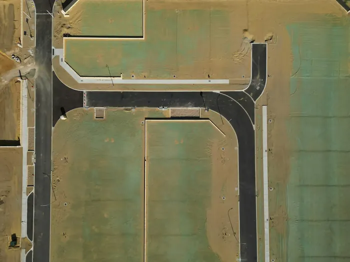

Przed projektem
Mapa do celów projektowych
Na niej projektant rysuje dom i zagospodarowanie działki. Mapę uzgadniamy z projektantem i inwestorem, wykonujemy w wersji papierowej i cyfrowej. Jeśli budynek ma stanąć bliżej niż 4 m od granicy, warto powiedzieć o tym od razu - sprawdzimy, czy dane o granicy są wystarczająco dokładne.
- Termin
- 7-14 dni
- Gwarancja
- 12 miesięcy